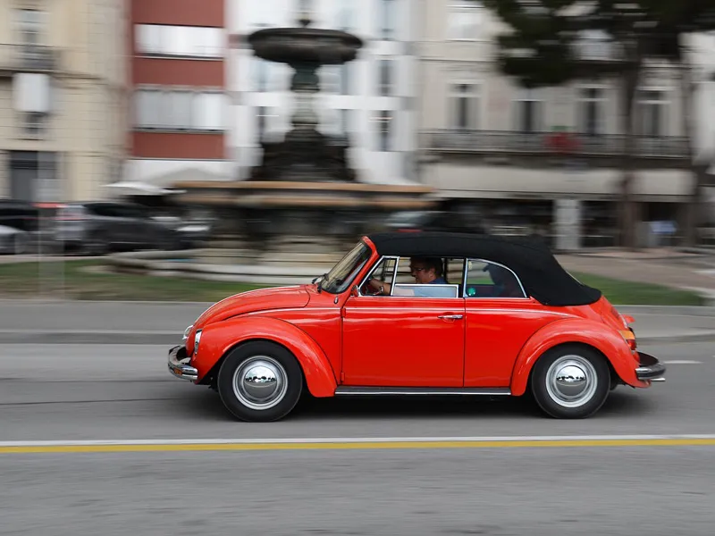
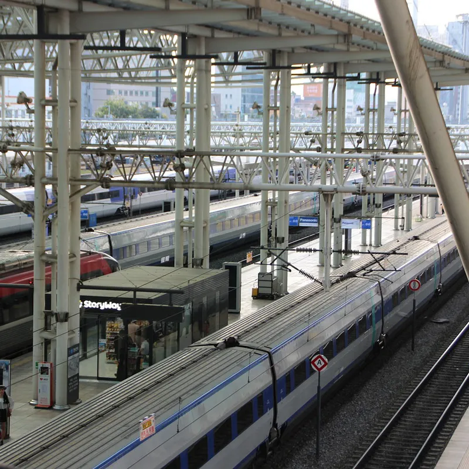

交通工具的選擇
台灣的交通工具十分多元，有大眾運輸工具，也可以搭乘客運巴士，坐計程車，或是搭配自行車跟租車，您可以任意選擇搭被您想要使用的交通方式到達旅遊目的地。台灣有和運租車，iRant...等等的租車業者提供出租，客運巴士有統聯客運，國光客運...等等，計程車有台灣大車隊或是Uber，另外在各大景點處與車站都設有UBike可以使用一卡通或是悠遊卡租自行車，大眾運輸有高鐵、台鐵、長途巴士、捷運、輕軌...等等，以下介紹三款大家最常使用到的大眾交通運輸工具。

交通工具推薦
